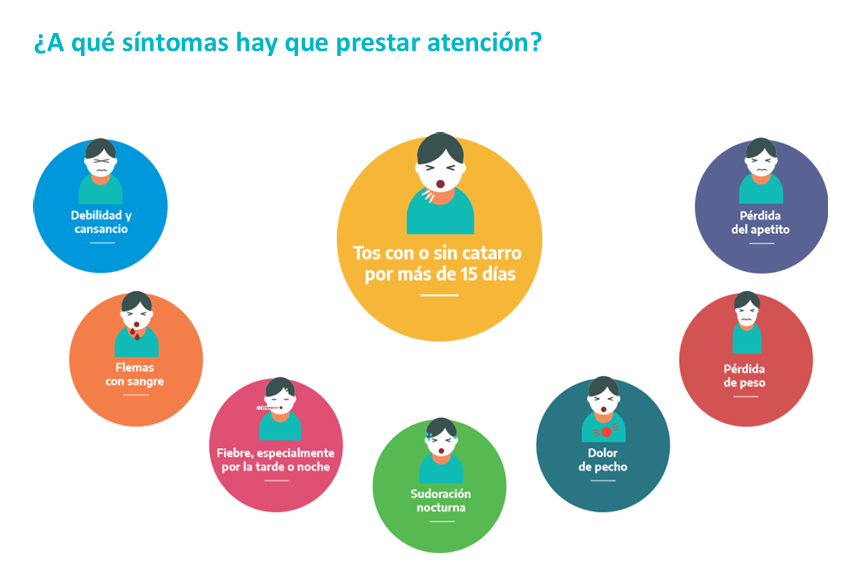
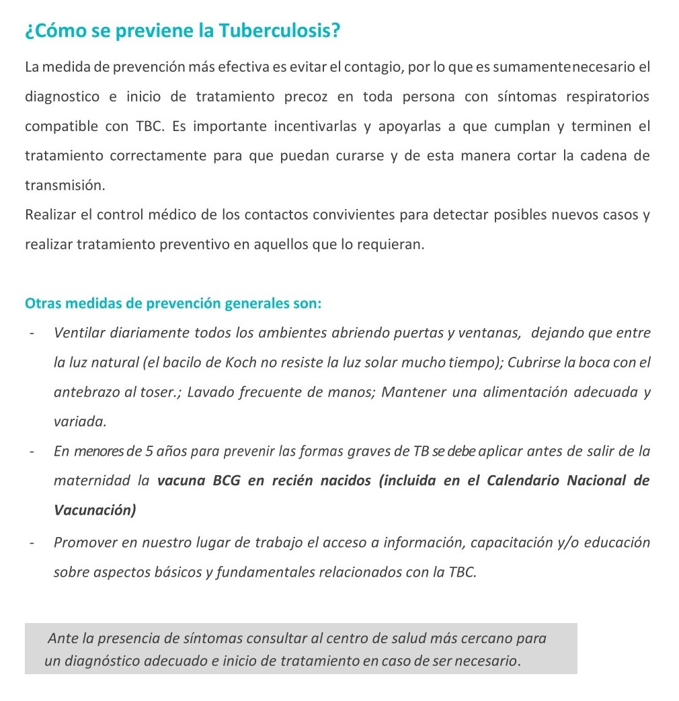

TBC: ¡Siempre mejor saber!

Ante el reporte de un caso de Tuberculosis (TBC) en nuestra comunidad, les acercamos la información orientativa que brinda el Ministerio de la Provincia de Buenos Aires en la Síntesis Guía extraída de la guía MSALBA.
La estudiante, se encuentra en buen estado e internada para observación.
La recomendación:
no alarmarse, informarse y tener presente...
